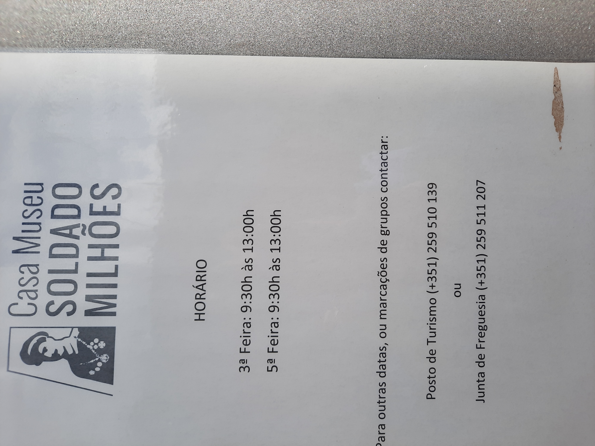
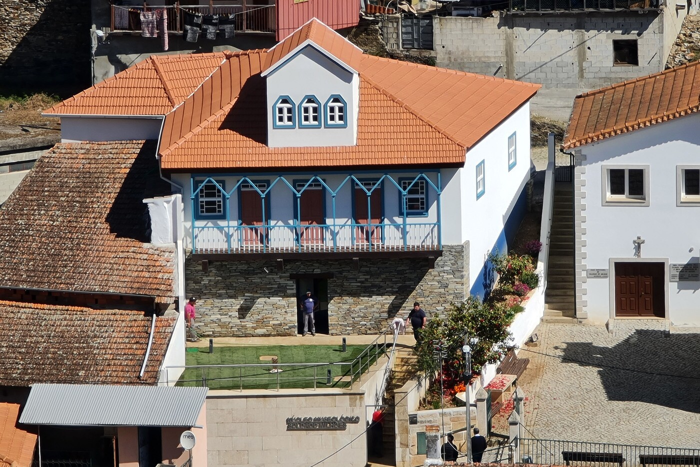
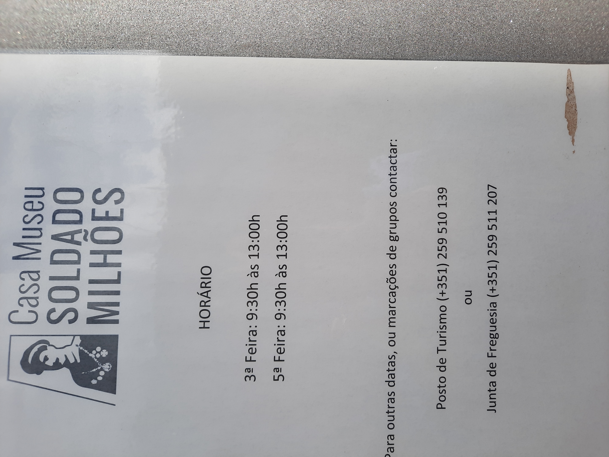
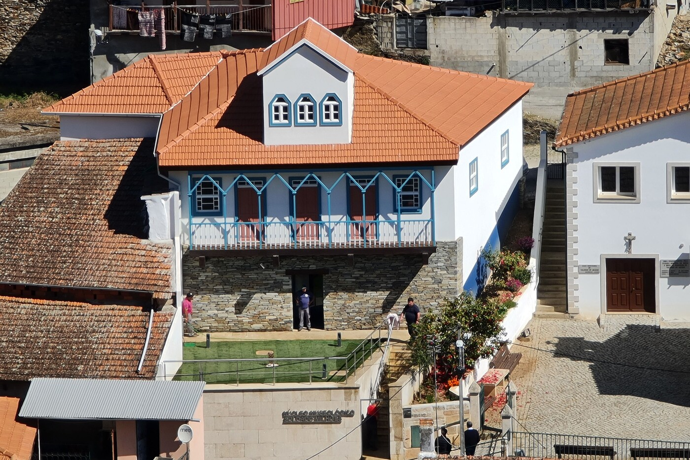

CONCLUSÃO
Não é por qualquer motivo que Aníbal Augusto Milhais é condecorado, ainda nos dias de hoje, como um homem que foi além da sua mortalidade e sucedeu em fazer aquilo que muitos não teriam coragem para fazer.
A sua história será tratada como um símbolo de superação, heroismo, e humildade.
O seu legado será honrado como o de alguém alguém que nunca hesitou em esticar uma mão mesmo ao custo dele próprio.
E o seu nome será lembrado como Herói Milhões.
Finalmente, gostaria de agradecer ao Núcleo Museológico Soldado Milhões, situado em Valongo de Milhais, pela informação e perservação do legado de Aníbal Milhais.
Este museu situa-se na casa antiga do Soldado Milhões e apresenta uma breve mas poderosa apresentação do herói Milhões. A maioria das imagens deste website foram tiradas nesse núcleo com permissão. Sem o museu, este trabalho não seria possível.
Se quiserem aprofundar o vosso conhecimento deste herói, visitem o museu. Nas imagens que se segue, esta representado a entrada, o edifício, e o horário do mesmo.
 


